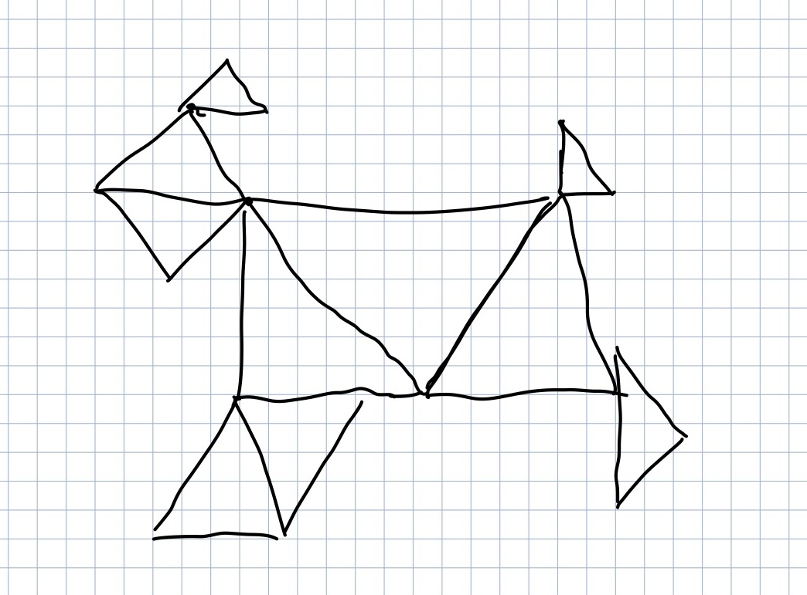

XXX
Draw Dog
Green Red Clear
Point Triangle Circle Spray On Spray Off
Red
Green
Blue
Size
Circle Segment Size
Spray Radius
Spray Fill
Spray mode: hit Spray On, then click and drag on the canvas. Radius controls how wide the spray is, Fill controls how many shapes per stroke.